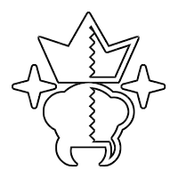

Survol de Grounded
Bienvenu à notre survol de Grounded !
Ce site vise à présenter les aspects principaux du jeu Grounded, mais ne vise pas à être un catalogue complet de toutes les informations à connaître sur le jeu. Pour un recueil d’information complet, veuillez vous référer au wiki du jeu en cliquant ici.
Survie
Avant tout, Grounded est un jeu de survie présentant plusieurs jauges à surveiller pour éviter de mourir. Il faut donc manger, boire et, bien entendu, ne pas prendre trop de dégât pour garder ses points de vie au-dessus de zéro. Il est aussi important de construire une base pour se défendre, stocker ses ressources, bâtir différentes stations pour raffiner ses ressources et bien sûr y réapparaître après une mort inattendue.

Mutations
À force de répéter certaines actions ou après avoir accompli certaines tâches, vous détectez une mutation. Cela signifie que si vous allez dans l’onglet du même nom dans votre inventaire, vous pourrez observer que vous avez débloqué une nouvelle mutation. Ces mutations peuvent être équipées à partir de cet onglet et donnent différents avantages pour vous aider dans votre survie. Certaines mutations ont plusieurs niveaux et seront améliorées en continuant de répéter la même action qui a causé son apparition.